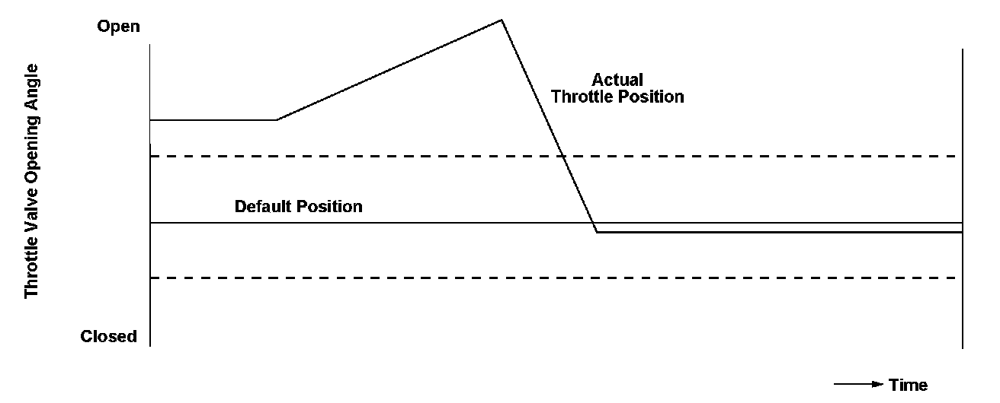
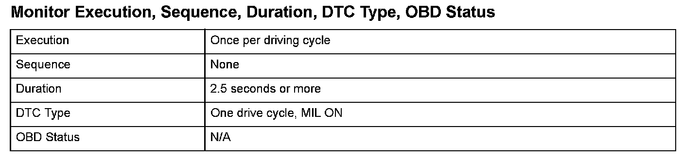
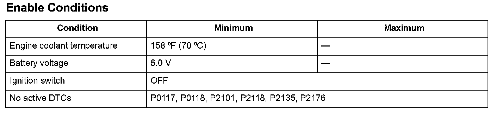

Advanced Diagnostics
DTC P1684: Throttle Valve Return Spring Performance Problem
General Description
The electronic throttle control system (ETCS) controls the throttle valve opening. The system is composed of the throttle actuator, the throttle valve, throttle position (TP) sensors A and B, the throttle actuator control module, the throttle actuator control module relay, the accelerator pedal position (APP) sensor, and the powertrain control module (PCM).
The throttle valve return spring is attached to the throttle valve gear to return the throttle valve to the default position. If the throttle valve does not return to the default position when the throttle actuator control module moves the throttle actuator to the default position from the middle position, a malfunction is detected and the malfunction data is transmitted to the PCM. When the PCM receives the malfunction data from the throttle actuator control module, the PCM detects the malfunction of the throttle valve return spring and a DTC is stored.

Monitor Execution, Sequence, Duration, DTC Type, OBD Status

Enable Conditions
Malfunction Threshold
The throttle valve opening angle is 17° or more, or 11° or less, for at least 2.5 seconds.
Driving Pattern
1. Start the engine. Hold the engine speed at 3,000 rpm without load (in Park or neutral) until the radiator fan comes on.
2. Turn the ignition switch OFF.
3. Turn the ignition switch ON.
Diagnosis Details
Conditions for illuminating the MIL
When a malfunction is detected, the MIL comes on and the DTC and the freeze frame data are stored in the PCM memory.
Conditions for clearing the MIL
The MIL will be cleared if the malfunction does not recur during three consecutive trips in which the diagnostic runs.
The MIL, the DTC, and the freeze frame data can be cleared by using the scan tool Clear command or by disconnecting the battery.